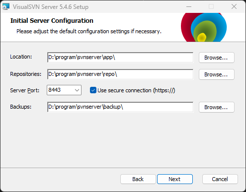
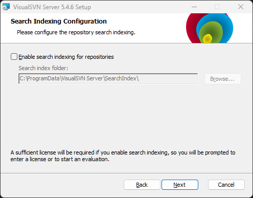
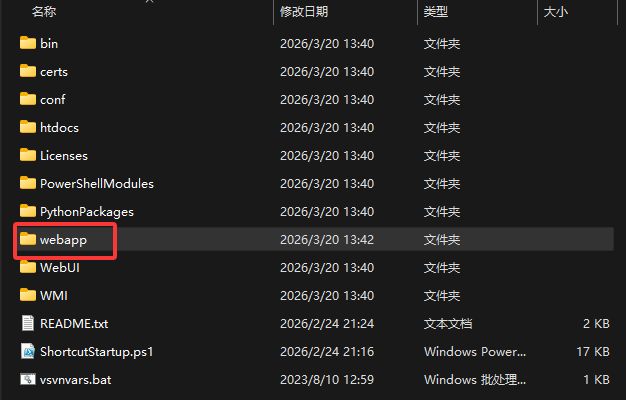
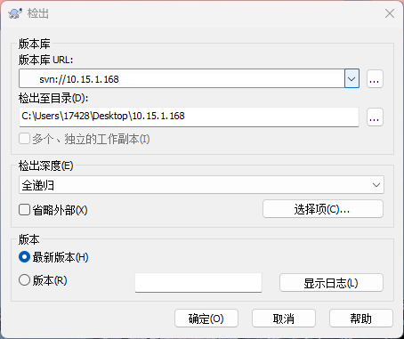
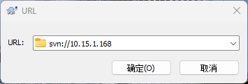

端口注意不要用443，因为会和ssh装上，所以推荐8443

对于社区版本，不要勾选这个
安装好后，在软件安装路径创建webapp/shop
然后去powershell执行创建仓库命令：svnadmin create D:\program\svnserver\app\webapp\shop就是在这个shop目录下初始化仓库。
PS D:\program\svnserver\app\webapp\shop> ls
目录: D:\program\svnserver\app\webapp\shop
Mode LastWriteTime Length Name
---- ------------- ------ ----
d----- 2026/3/20 13:43 conf
d----- 2026/3/20 13:43 db
d----- 2026/3/20 13:43 hooks
d----- 2026/3/20 13:43 locks
-ar--- 2026/3/20 13:43 2 format
-a---- 2026/3/20 13:43 251 README.txt
接下来进行服务器监管（通过http://ip地址 找到某目录下的文件）
svnserve -d -r D:\program\svnserver\app\webapp\shop
-d代表后台运行-r代表路径
接下来使用svn://localhost就可以看到这个shop仓库svn默认不支持匿名用户连接，所有用户必须要指定。
下边把所有用户变成可以写的权限，修改仓库下的conF下的配置文件：D:\program\svnserver\app\webapp\shop\conf\svnserve.conf
19行变成
anon-access = read
auth-access = write
password-db = passwd
authz-db = authz
D:\program\svnserver\app\webapp\shop\conf\passwd新建一个用户，设置好账号密码
charles = 123456
D:\program\svnserver\app\webapp\shop\conf\authz后边设置用户的权限
[/]
* = r
charles = rw
TortoiseSVN-1.9.2.26806-x64-svn-1.9.2.msi软件本身和LanguagePack_1.9.2.26806-x64-zh_CN.msi汉化安装包
